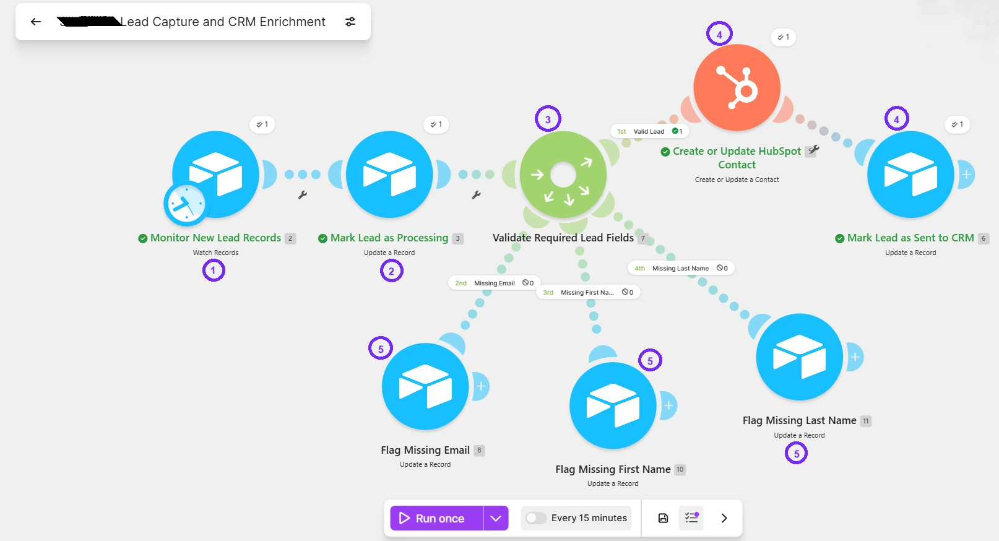

Validated Simulation
SIM-01
Automated Lead Capture, AI Qualification and CRM Enrichment
A lead-processing workflow that validates required information, sends complete records to HubSpot and flags incomplete submissions for manual review.
- Required-field validation
- Valid and incomplete lead routing
- HubSpot contact creation or update
Airtable
Make
HubSpot
View Case Study